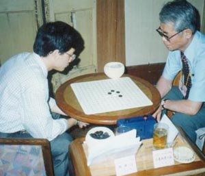
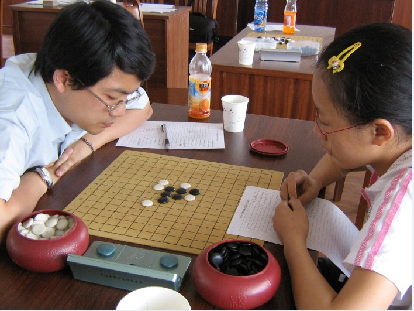

天涯·明月·刀
#1 天涯·明月·刀 作者：王向东 发表时间：2010-11-19 19:40:39
天涯，何处是天涯？天涯在何处？
天涯若比邻，何处不识君。天涯就在你的身边，或许就在你的眼前。
明月，什么是明月？人间真的有明月吗？
清风拂我面，明月照你心。心即是月，心静便可见月明。
刀，是一把怎么样的刀？
妖刀，是一把友善的妖刀。是胜人之刀，而非杀人之刃。
用这样的语句作为开场白，或许我所要描述的这位还是喜欢的，因为他除了钟情于五子棋外，最大的爱好就是看书写作。而看的书除了文史外，就首推武侠了。尤其喜爱金庸、古龙、梁羽生和温瑞安的书。记得多年前，他和我闲聊时，就谈起过古龙的《天涯明月刀》，言语间欣赏的很，眉宇中流露出仰慕的神情。再联系他的实际，就有了我这样的开场白。
很多时候以来，和他下棋总是感觉到“妖气冲天”。有时对手明明是优势局却总会被他的那些看似弱防的棋防住。无论对手布什么局，似乎都没法难倒他，他总会有一些意想不到，从没见过的招式等着你，然后，对手就不知不觉地陷了进去，直至没顶。时间久了，大家都喜欢叫他“妖刀”。呵呵，知道我说的人了吧，对，就是他，“东邪”——顾炜，上海五子棋界的四大柱石之一，既是与李洪斌、葛凌峰、赵锴齐名的上海棋手中的领军人物，也是南方目前的顶尖高手之一。
和顾炜下棋，你可以感觉到他的棋，就象很多人说的那样，既没有“江南棋魔·西毒”李洪斌那样酣快凌厉的攻击，又没有“钝刀金盾”章志强那样稳健的防守；既没有“战神·南帝”葛凌峰那种收发自如的攻防，又逊于“计算机·北丐”赵锴那样精确的算度；既没有“剑气漫天花满楼”罗锦伟豪情满怀的做棋，又没有胜过如，“天意”田溢昉、“擒龙手”张捷等棋手的拼搏精神。但是，顾炜就是顾炜，他那种旁人替代不了的风格，使他跻身于顶尖高手行列而丝毫不见逊色。
他的棋令对手琢磨不定，既不知道他会开什么局，又不知道应当对他开什么局。有时自认为准备充分的布局，却被他的一招棋破坏了如意算盘。他的序盘或许是受当年上海五子棋运动最初推动者之一的李北峰先生的影响，往往有不在棋谱之内的变化出现，无论谁见了，都是大为头疼。他中盘的行棋有时令对手很难判断出是强还是弱。有时对手自认为正确的判断往往会导致最终的失败。更多的时候，他的看似无理的招数，其实都蕴涵了丰富的变化和后招。所以，有人说，看顾炜的棋有时很难一下明白他的意图。嘿嘿，妖刀总有够妖的一面嘛！
和他相处久了，你能感受到下棋时，他的心如止水，他的棋中没有胜负，只有快乐。他常说，下棋是和人下。下之前，我注意的是人；局中，我的心中只有感受快乐。只有不断的变化，才能感受到快乐，或许这也才是连珠的真谛吧。
最后用他喜欢的一句话作为结束语吧，“行云流水若有意，天涯明月总关情”。
1996 年接触现代五子棋。1997年起逐步从事上海五子棋运动发展工作，主要分管组织管理和活动策划，上海第一代棋手和坚定的推广者。
/*760*90，创建于2012-2-9*/ var cpro_id = 'u761865';
#2 Re:天涯·明月·刀 作者：被感动的人 发表时间：2010-11-19 19:46:56
我传图片
［此帖子已被 被感动的人 在 2010-11-19 19:47:29 编辑过］
［此帖子已被 被感动的人 在 2010-11-19 19:47:59 编辑过］
#3 Re:天涯·明月·刀 作者：黄药师 发表时间：2010-11-19 20:20:43

2007年来南通 苏沪交流 对手是当时五年级的南通小棋手许姝怡。经过顾炜老师的点拨，3年后，许姝怡夺得全国少年儿童锦标赛少年女子组冠军。
［此帖子已被 黄药师 在 2010-11-19 20:23:28 编辑过］
［ 茗弈宽容 于 2010-11-23 16:30:40 时花20金币送鲜花一朵］
［此帖子已被 黄药师 在 2010-11-23 19:32:44 编辑过］
#4 Re:天涯·明月·刀 作者：岳麓小棋后 发表时间：2010-11-19 20:57:50
以前看过一本武侠小说，不知道是不是古龙的，书名就是《天涯明月刀》#5 Re:天涯·明月·刀 作者：安娜制作所 发表时间：2010-11-23 8:15:30
三楼的棋盘好漂亮!#6 Re:天涯·明月·刀 作者：茗弈宽容 发表时间：2010-11-23 16:37:06
哇，收集了顾老师这么多照片啊！前边几张应该好几年前的吧？#7 Re:Re:天涯·明月·刀 作者：被感动的人 发表时间：2010-11-23 22:29:16
引用：是的，本文能查到的资料是最早发表于2003年，我所上传的图片是05年时的插图。
原文由 茗弈宽容 发表于 2010-11-23 16:37:06 :
哇，收集了顾老师这么多照片啊！前边几张应该好几年前的吧？
［此帖子已被 被感动的人 在 2010-11-23 22:32:00 编辑过］